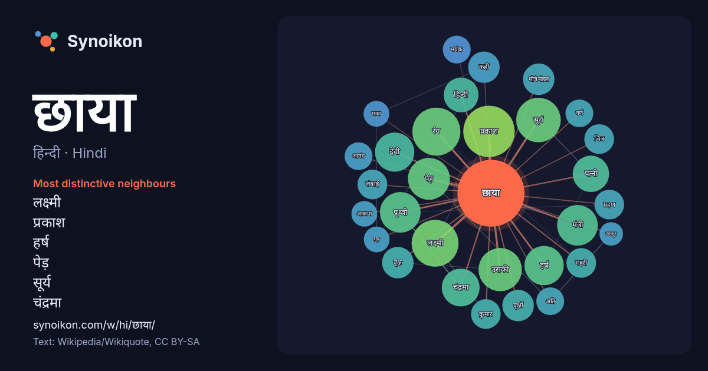

हिन्दी · Hindi · word of the day list
छाया
“shadow” · The words found around it in 706 instances from Hindi Wikipedia, Wikiquote.

Most distinctive neighbours
- लक्ष्मी 18×
- प्रकाश 14×
- हर्ष 14×
- पेड़ 14×
- सूर्य 13×
- चंद्रमा 13×
- रंग 11×
- मंत्री 10×
- पृथ्वी 9.7×
- मंत्रिमंडल 9.4×
- वृक्षों 9.2×
- देवी 8.7×
- पत्नी 8.1×
- वृक्ष 8.0×
- मयंक 8.0×
- गहरी 7.7×
- लंबाई 7.2×
- वर्ण 6.9×
- कुमार 6.7×
- माया 6.4×
× = how many times more often than in general Hindi Wikipedia text.
Most frequent neighbours
- प्रकाश 24
- रंग 21
- लक्ष्मी 20
- सूर्य 18
- उसकी 17
- पेड़ 16
- समय 16
- कारण 15
- पृथ्वी 15
- मंत्री 15
- देवी 14
- हर्ष 14
- चंद्रमा 13
- पत्नी 12
- नाम 11
- हिन्दी 11
- कहीं 9
- गीत 9
- जीवन 9
- दूर 9
In context
- … ्शक वस्तु रखने पर प्रकाश की किरणें वस्तु को पार नहीं कर पाती हैं जिससे वस्तु के पीछे एक अन्धकार भाग दिखाई पड़ता है जिसे छाया कहते हैं। Wikipedia snippets · छाया
- का छाया मंत्री कहते हैं उस सरकारी मंत्री के कामकाज की समीक्षा करता रहता है। अगर बाद में कभी विपक्षी दल सत्ता में चुन के आता है तो अक्सर इन्हीं छाया मंत्रियों Wikipedia snippets · छाया मंत्रिमंडल
- युग छाया हिन्दी की एक फिल्मी पत्रिका है। 1976 में वेद प्रकाश वैदिक द्वारा संपादित ग्रंथ हैं हिंदी पत्रकारिता, विविध आयाम में प्रकाशित लेख।[मृत कड़ियाँ] Wikipedia snippets · युग छाया
- चित्र छाया हिन्दी की एक फिल्मी मासिक पत्रिका है। यह वर्ष 1959 से दिल्ली से प्रकाशित हो रही है। 1976 में वेद प्रकाश वैदिक द्वारा संपादित ग्रंथ हैं हिंदी Wikipedia snippets · चित्र छाया
- छाया गीत - विविध भारती से प्रसारित होने वाला फ़िल्मी गीतों का एक अनूठा कार्यक्रम। वैसे फ़िल्मी गीत तो विविध भारती पर बजते ही रहते है, जिनमें अधिकतर गीत Wikipedia snippets · छाया गीत
- छाया 1961 में बनी हिन्दी भाषा की फिल्म है। सुनील दत्त आशा पारेख - सरिता फ्राय चौधरी निरूपा रॉय नासिर हुसैन ललिता पवार - रुक्मनी अचला सचदेव भारती रॉय मोहन Wikipedia snippets · छाया (1961 फ़िल्म)
- मयंक छाया एक जाने-माने पत्रकार और लेखक हैं जो अमेरिका के शिकागो शहर में रहते हैं। भारतीय उपमहाद्वीप और अमेरिका में व्यापक रिपोर्टिंग से जुड़ा उनका पत्रकारिता Wikipedia snippets · मयंक छाया
- शून्य छाया दिवस वह दिन होता है, जिस दिन सूर्य दोपहर के समय किसी वस्तु की छाया नहीं डालता है। इसी दिन सूर्य बिल्कुल आंचल स्थिति में होता है। शून्य छाया दिवस Wikipedia snippets · शून्य छाया दिवस
More Hindi words
- इतिहास
- ईश्वर
- कार्य
- कुत्ता
- गर्मी
- गाना
- घंटी
- घड़ी
- घोड़ा
- चाय
- चित्रकला
- जंगल
- जलवायु
- जीवन
- तूफ़ान
- दर्पण
- द्वीप
- नक्षत्र
- नमक
- परिवार
- पहाड़
- पानी
- पैसा
- प्रकृति
- बगीचा
- बिल्ली
- भाषा
- भोजन
- माता
- मानचित्र
- मृत्यु
- मौन
- रेगिस्तान
- रेलगाड़ी
- रोटी
- वर्षा
- विज्ञान
- शक्ति
- शरद
- शहद
- शहर
- सड़क
- सत्य
- समय
- सर्दी
- सेतु
- स्वर्ण
- स्वास्थ्य
- हृदय
Precomputed on 2026-10-09 with default settings (±5 words, medium corpus). The interactive map can refresh it with live data.